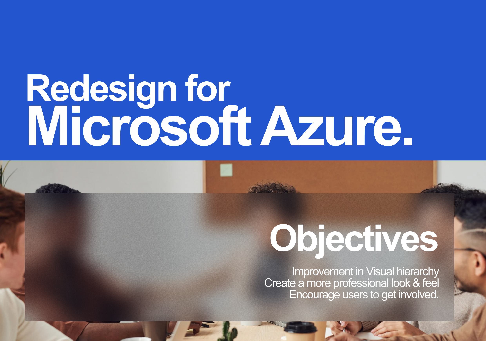
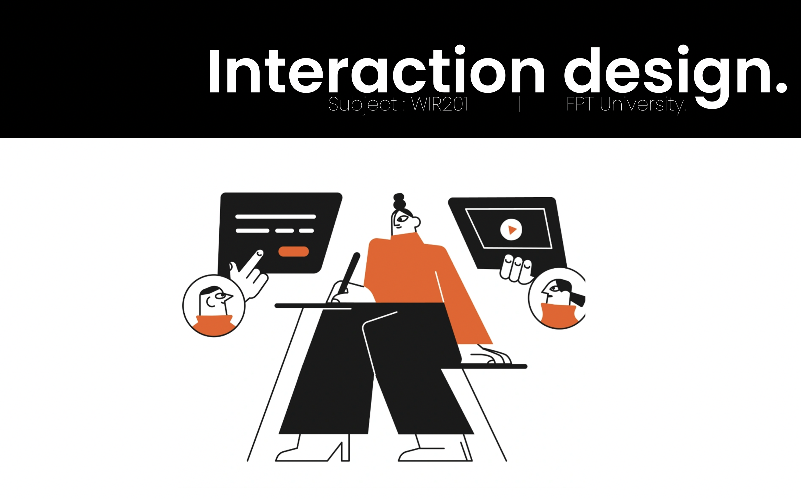
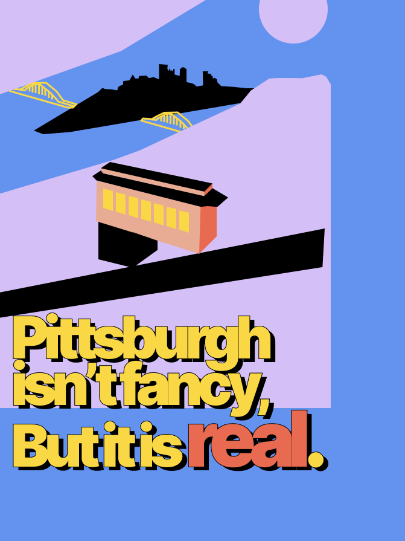
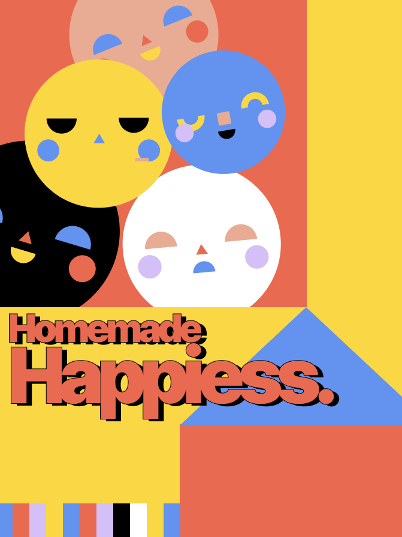
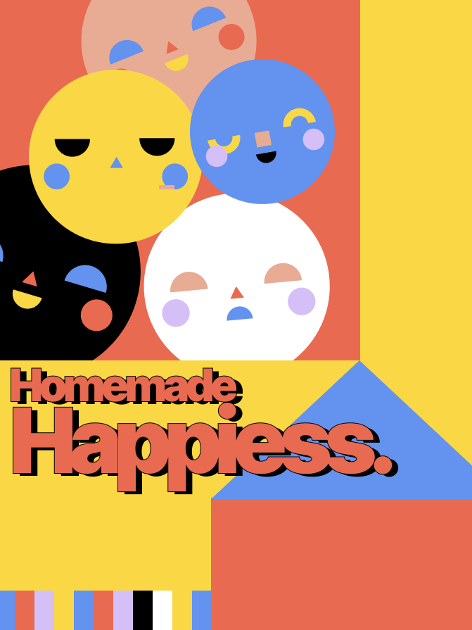
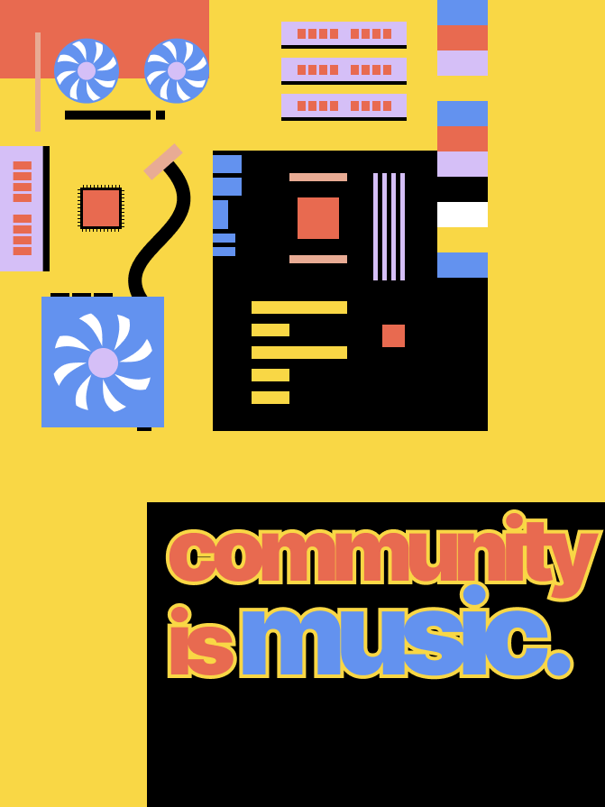
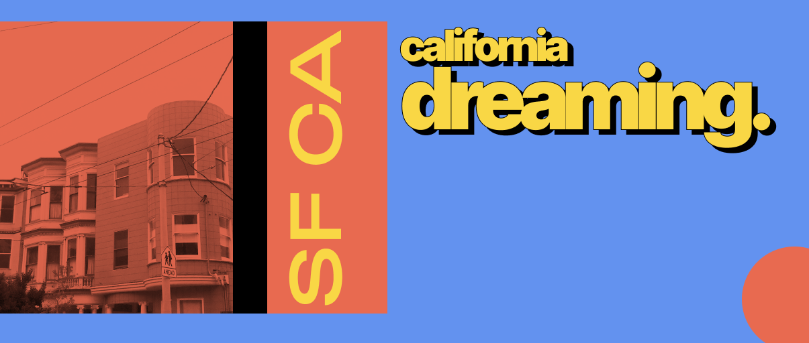

Redesigning the Microsoft Azure website.
Following the brand guidelines, the Microsoft Azure website was redesigned. When revamping, the grid system, typography, and style guide were all taken into consideration. In contrast to the previous design, the most recent one focuses on modern minimalism for a more dynamic engagement.

UX Case study guidelines.
Examples of design work that designers include in their portfolios are UX case studies. In order to demonstrate a teaching point, an example template was made for the pupils. The students' learning objective was to provide recruiters with crucial insights and demonstrate problem-solving skills by telling engaging stories in text and visuals. Such stories highlight the abilities and modes of thought of designers and increase their attractiveness to employers.
UX Case study -
Mobile application.
This program was created to support Sumbava-area grocery store business processes that are still done offline. Many functions are included in this program so that end-to-end users can use the Android app to shop online. However, this app was developed as a demonstration tool for the students to provide them an understanding of the general procedure involved in developing a mobile app.

UI Styling is not that difficult.
Examples of design work that designers include in their portfolios are UX case studies. In order to demonstrate a teaching point, an example template was made for the pupils. The students' learning objective was to provide recruiters with crucial insights and demonstrate problem-solving skills by telling engaging stories in text and visuals. Such stories highlight the abilities and modes of thought of designers and increase their attractiveness to employers.
Course Design - FPT University
Interaction design course.
I've always loved interaction design, so being given the task of creating the course structure for this course made me pleased. The student will be guided through every step of the product design process in this course, which is separated into three sections - beginer | intermediate | expert.




Graphical Illustrations.
I've always enjoyed coloring and drawing. Here are a handful of my own illustrations. I do instruct first-year students at FPT University on the Fundamentals of Graphic design, Visual communication & Typography.

